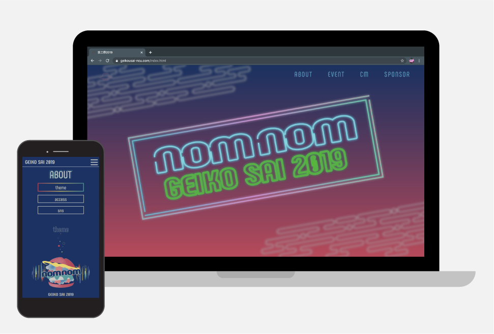

GotoAyaka's
PORTFOLIO

芸工祭2019webページ
nomnom
制作期間
2019.8-2019.9
担当範囲
デザイン（about、cafe, booth、各ページ内のタイトル）、コーディング（cafe、booth）
使用言語・ツール
HTML / CSS / JavaScript / jQuery / Illustrator
制作背景
名古屋市立大学ではキャンパスごとに学祭を行なっていて、私の所属している芸術工学部では芸術工学部の学生のみで芸工祭を毎年10月に開催しています
芸工祭では1〜3年の学生が任意で各部署に所属して学祭の準備をするのですが、私はweb部署に所属して芸工祭のwebサイトの制作をしました。
デザインはキービジュアルなどをグラフィック部署が作るのでそのデザインを元にweb部署でサイトのデザインをするのですが、私はabout、cafe、boothのページのデザインと各ページのデザインの統一を行いました。
コーディングの方はcafeとboothのページのコーディングを行いました。
デザインをするにあたって、キービジュアルとコンセプトムービーがもうすでにできている状態だったので、どういうことを考えてこのキービジュアルやコンセプトムービーになったのかを考えそれを反映させるようにしていきました。
デザイン、コーディング共に1、2年とペアを組んでデザインの仕方やコーディングの仕方を教えながら進めていきました。